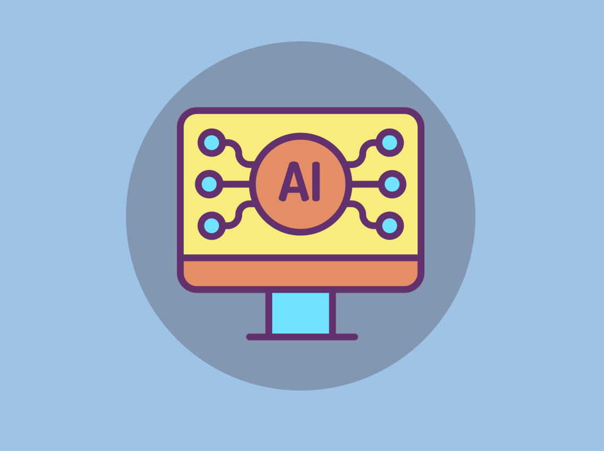

Portfolio

About
저는 2018 년 서울 대학교에서 기계 공학 학위를 취득했으며, 현재 서울 대학교 기계 공학과 석사 과정 학생입니다.
제 현재 연구 주제는 로봇 시스템을 위한 시스템 건전성 및 리스크 관리(PHM),
그리고 산업 응용 분야에서의 딥러닝 기반 결함 감지 방법입니다.
I received a B.S. degree in mechanical engineering from Seoul National University, Seoul, Republic of Korea, in 2018.
He is currently pursuing an M.S. degree with the Department of Mechanical Engineering from Seoul National University.
His current research topics include prognostics and health management(PHM) for robot systems, deep-learning based fault detection method in industrial applications.
Copyright © YeongtakOh 2020